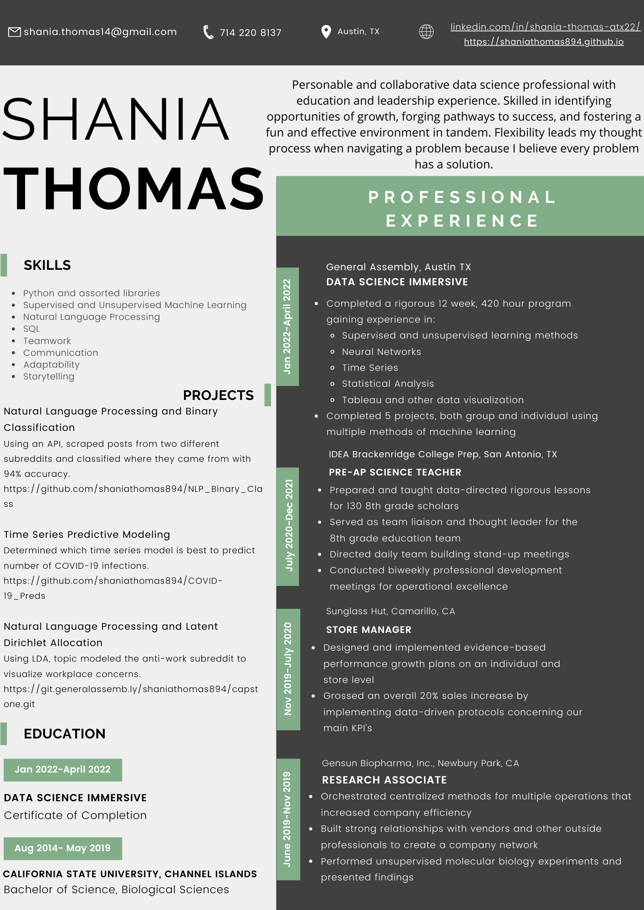

My Career Journey
Before I made a career changing decision to enter the field of data science, I worked in biopharmaceuticals, retail, and education. My time in biopharmaceuticals taught me how to work quickly and independently, and how to work with and learn from others. My time in retail taught me how to make business decisions, how to manage a team, how to deliver results, and enhanced my communication skills. My time in education taught me flexibility, quick thinking, patience, and how to operate on deadlines. All of these fields, however, led me to understanding how data shapes the world and the decisions we make.
Finally, my time in the Data Science Immerisive has taken all of those soft skills and transfered them into hard skills, and made me a bona fide data scientist.
